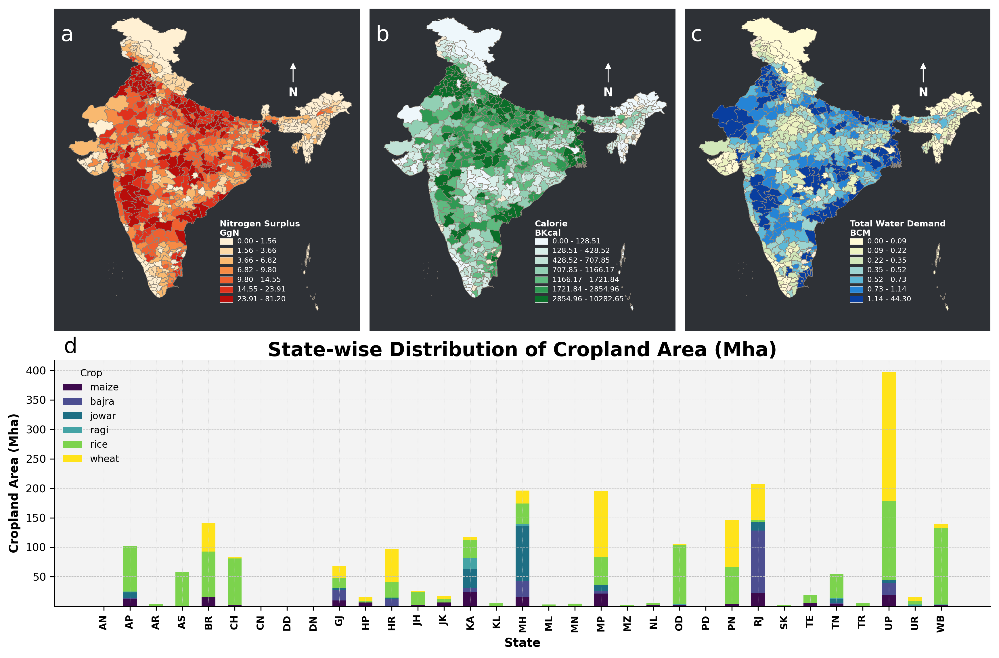
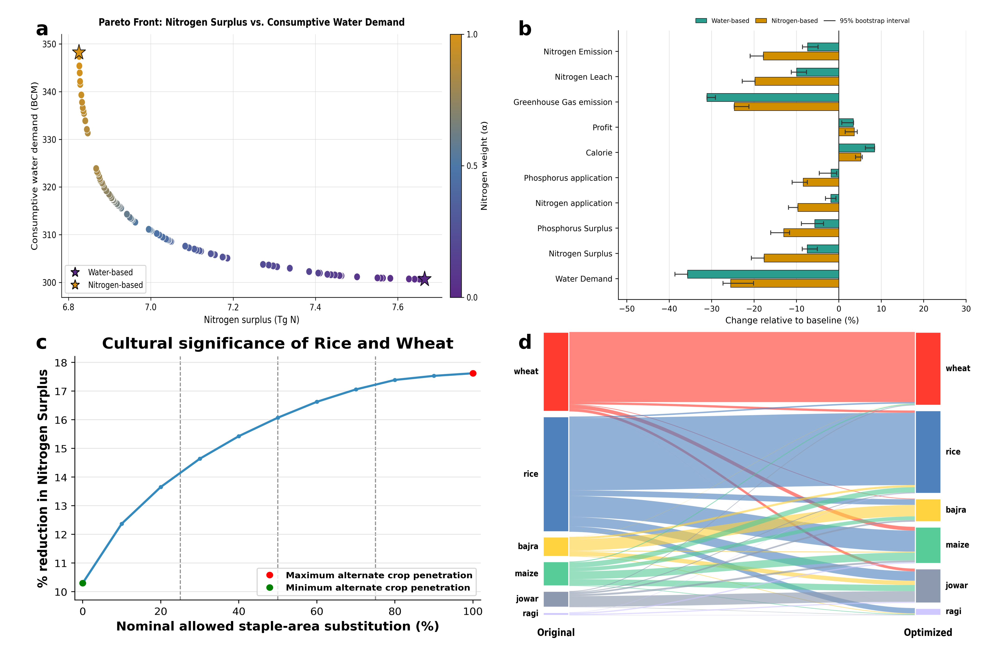
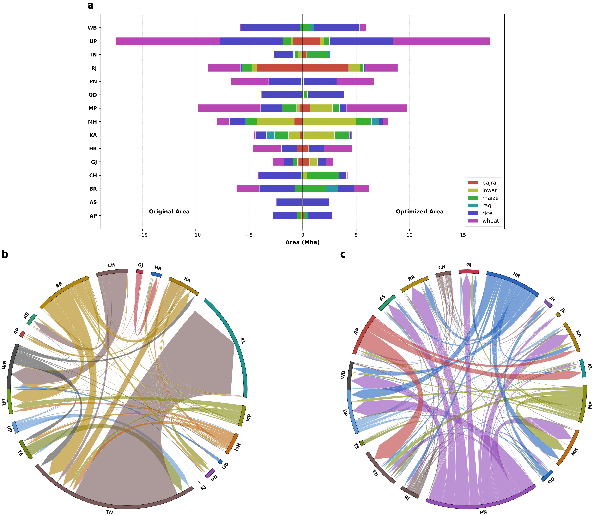
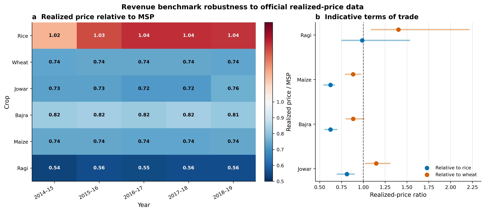
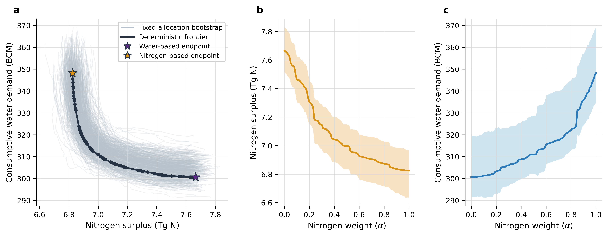

Audited Reproducibility Report
This HTML report tracks the current audited workflow, generated figure assets, the source-data package, and the containerized rerun path.
Generated UTC: 2026-04-20T07:13:39.322155+00:00
Runner: code_final/run_final_revision2_batch.sh
Run mode: full
Repository root: .
Preview Panels
Figure 1 reproduced render

Figure 2 primary realized-price composite

Figure 3 primary realized-price composite

SI revenue robustness

SI Figure 2a frontier envelope

Main Outputs
| Artifact | Status | File | Type | Size | SHA-256 |
|---|---|---|---|---|---|
| Figure 1 reproduced PDF | present | figure1_reproduced.pdf | 8180623 | 9aeb85099fc0f436 | |
| Figure 2 primary realized-price composite PDF | present | fig2_main_revision2.pdf | 974475 | aef5bf44101972f5 | |
| Figure 2 primary realized-price composite PNG | present | fig2_main_revision2.png | png | 1057322 | 44cc452ed4b6b140 |
| Figure 2a realized-price panel PDF | present | figure2_main_panel_a.pdf | 46988 | 2d47ab540bd52d03 | |
| Figure 2b realized-price panel PDF | present | figure2_main_panel_b.pdf | 20842 | fd91e566debd1584 | |
| Figure 2c realized-price panel PDF | present | figure2_main_panel_c.pdf | 19508 | 6cf2bda8385b6720 | |
| Figure 2d realized-price panel PDF | present | figure2_main_panel_d.pdf | 49968 | 287ca0c0430820e4 | |
| Figure 3a realized-price panel PDF | present | figure3_main_panel_a.pdf | 24325 | 197571f8fdbf5e89 | |
| Figure 3b realized-price panel PDF | present | figure3_main_panel_b.pdf | 43386 | c8e418a3c496409c | |
| Figure 3c realized-price panel PDF | present | figure3_main_panel_c.pdf | 59221 | 8739d0a987d69f8a | |
| Figure 3 primary realized-price composite PDF | present | fig3_main_revision2.pdf | 2666675 | 09f2cbda67f6a8a7 |
{kind=link}
Supplementary Outputs
| Artifact | Status | File | Type | Size | SHA-256 |
|---|---|---|---|---|---|
| SI revenue robustness PDF | present | si_revenue_benchmark_robustness.pdf | 32940 | 85eadadc5388b86e | |
| SI revenue endpoint sensitivity PDF | present | si_revenue_benchmark_endpoint_sensitivity.pdf | 26160 | 33efabad3c84f9a3 | |
| SI revenue-profit sensitivity PDF | present | si_revenue_profit_sensitivity.pdf | 32955 | 694152de9a6fbabc | |
| SI Figure 2a frontier bootstrap PDF | present | si_figure2a_frontier_bootstrap.pdf | 546486 | 0ea236b5982b0dcc | |
| SI seasonal substitution audit PDF | present | si_s21_seasonal_substitution_audit.pdf | 668838 | b6a4888494963e64 |
Source Data Package
| Artifact | Status | File | Type | Size | SHA-256 |
|---|---|---|---|---|---|
| Source Data workbook | present | Source Data.xlsx | xlsx | 637445 | a23b7a0c90d56b53 |
| Source Data zip | present | Source_Data_package.zip | zip | 862844 | 43668d3f0eb040f8 |
| Source Data README | present | README.md | md | 8373 | 6217e6722734383e |
Audit Notes
| Artifact | Status | File | Type | Size | SHA-256 |
|---|---|---|---|---|---|
| Figure 1 reproduction summary | present | figure1_reproduction_summary.md | md | 790 | 4b76f222b6496c37 |
| Figure 2 cap-variant audit | present | figure2_cap_variant_audit.md | md | 7076 | e5f7c940c9f7ce1f |
| Figure 2 legacy-faithful audit | present | figure2_legacy_faithful_audit.md | md | 6883 | fcd74079beafe6e9 |
| Release-figure verification report (Markdown) | present | release_figure_sync_report.md | md | 2685 | e93e5e314a4a0729 |
| Release-figure verification report (JSON) | present | release_figure_sync_report.json | json | 3087 | 51ea281c634739d1 |
Workflow Files
| Artifact | Status | File | Type | Size | SHA-256 |
|---|---|---|---|---|---|
| Container Dockerfile | present | Dockerfile | txt | 670 | d90711b0ea8be673 |
| Container requirements | present | requirements.txt | txt | 171 | f9f690d62f94c79d |
| Container entrypoint | present | entrypoint.sh | txt | 268 | 930fdeb51874b099 |
| Final code README | present | README.md | md | 3052 | 8c69c1cd8bbe028f |
| Final code manifest | present | FINAL_CODE_MANIFEST.md | md | 4238 | 96bc5fc45f898681 |
| Method notation map | present | METHOD_NOTATION_MAP.md | md | 6680 | 7d49d29bc0ea62f1 |
| Final batch runner | present | run_final_revision2_batch.sh | txt | 3727 | 9328df9409bd55be |
| Final Docker runner | present | run_final_revision2_container.sh | txt | 316 | f0fd854165c8b140 |
| Docker runner wrapper | present | docker_run_audited_revision2.sh | txt | 399 | f8e25dd662beb404 |
| Audited batch runner | present | run_audited_revision2_batch.sh | txt | 3458 | 5be33bfb931fd5c3 |
| HTML report generator | present | generate_audited_html_report.py | txt | 16100 | 85f09e0624777da8 |
| Release-figure verifier | present | verify_release_figures.py | txt | 4757 | 9d6698b8479bd2b3 |